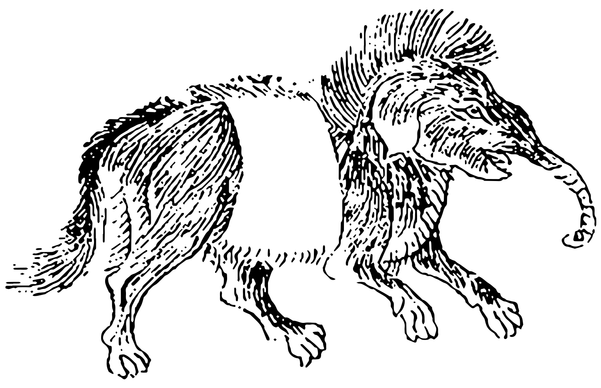
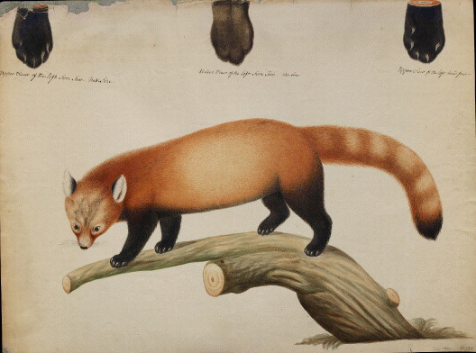

Carvking · Panda · An investigation
The Animal They Would Not Draw
For two thousand years Chinese writers described the giant panda: a bear-like animal from Sichuan, black and white, that eats bamboo. In all that time, almost nobody drew one. And the oldest picture we have gives it an elephant's trunk.
I didn't go looking for a conspiracy. I went looking for the oldest picture of a panda. What I found was a hole in the record the shape of a bear, a monster standing in it, and a second panda with a cover story of its own. Every claim below is sourced. The conclusions are mine.
See all 2,000 years on one chart: The Mo Chronicle.
Open the infographic →1 · The oldest drawing
Exhibit A: a panda with a trunk
The ancient Chinese word for the giant panda was mo (貘). That isn't my theory. It's the conclusion of Donald Harper of the University of Chicago, in a 2013 paper in the journal Early China, following Chinese scholars who first argued it in the 1970s. Hold on to that date.
The oldest surviving picture of the mo is in the Erya yintu, an illustrated edition of China's oldest dictionary. Its pedigree reads like a chain of custody: an illustrated Song-dynasty (960–1279) edition was copied by hand in the Yuan dynasty (1271–1368), and that Yuan copy survives as a woodblock facsimile printed in 1801. So the image is a copy of a copy of a copy.

Look at the coat. White middle, black shoulders, black legs. That's the giant panda's pattern, and this is the only early depiction that gets it. Now look at everything else: an elephant's trunk, and a body assembled from the stock parts of a nightmare. The standard formula for the mo in later Chinese books was elephant trunk, rhinoceros eyes, cow tail and tiger paws.
2 · The absence
Two thousand years without a portrait
As far as I can find, no drawing of a giant panda made from life exists before the 19th century. The first one came from a Frenchman. In 1869 the Lazarist missionary Père Armand David obtained a specimen from hunters in Sichuan and sent it to Paris. He named it Ursus melanoleucus, the black-and-white bear. The first printed image came from that specimen: a plate in Henri and Alphonse Milne-Edwards' Recherches pour servir à l'histoire naturelle des mammifères, issued in parts from 1868 to 1874.
Before that, Chinese artists drew the mo as a chimera, and they copied each other doing it. Wang Qi's 1609 encyclopedia Sancai tuhui printed a trunked mo. The 1712 Japanese Wakan sansai zue and the 1725 Chinese imperial encyclopedia copied it so closely that Harper uses one detail, the raised left front paw, as proof of copying.
Then think about where you'd expect to see a panda. China produced bronzes, pottery, silk painting, Song landscapes, Yuan drama, Ming fiction and Qing porcelain, an enormous visual culture that put cranes, tigers, deer, carp and monkeys on everything. I've found no recognisable giant panda in any of it. The panda you see today on scrolls and in “traditional-style” ink paintings is largely a modern arrival of roughly the last 40–50 years, from the late 20th century, after the animal became a national symbol.
3 · The texts knew
The words were right. The pictures were wrong.
The written record never lost the animal.
- The Erya (c. 3rd century BCE) defines the mo as a “white leopard.” Its great commentator Guo Pu (276–324) fills it in: it resembles a bear, with a small head and short legs, is mottled black and white, and eats copper, iron and bamboo.
- Xu Shen (c. 55–c. 149 CE), in the Shuowen jiezi, China's first great character dictionary, says the mo “resembles the bear, yellow and black in colour, comes from Shu.” Shu is Sichuan, the panda's home.
- Li Shizhen, in his 1596 Bencao gangmu, still says it's like a bear, black and white, eats bamboo, and lives in the Emei mountains of Sichuan and in Yunnan. He also notes, casually, that “in the Tang dynasty it was a favorite motif for screens.” Then, in the same entry, he repeats the trunk.
So what happened? Harper pins it on one man. In 823 the Tang poet Bo Juyi (772–846), who suffered from headaches, had a painter put a mo on his folding screen, because a picture of the beast was believed to ward off sickness and evil. He wrote a famous little poem about it, and its preface gives the description: “elephant trunk, rhinoceros eyes, cow tail, tiger paws.” That's the formula. For roughly a thousand years after that, the picture of the mo followed Bo Juyi, not the bear.
And here's the part that should make you sit up. In 1824 the French sinologist Jean-Pierre Abel-Rémusat looked at those trunked woodblocks and decided the mo was a tapir, specifically the Malayan tapir Europe had just described. Western zoology took his word for it. Japan followed, then China. The word mo still means tapir today. Harper's verdict: “One man's speculation led to an event of modern cultural amnesia and the giant panda was erased from the record of pre-modern Chinese civilization until the 1970s.”
4 · The other panda
The red panda's cover story
Now the second animal, because it was here first, at least in English.
In 1818 Bharat Singh, a plant collector working in Kathmandu for the Calcutta Botanic Garden, noticed something odd for sale in a bazaar: a “stuffed otter” that wasn't an otter. The story was reconstructed only in 2023, from letters between the British Residency in Kathmandu and the botanist Nathaniel Wallich (Watson, Archives of Natural History). Singh went on to get more specimens and information from traders. It was a red panda.
Major-General Thomas Hardwicke, an East India Company officer who commissioned thousands of natural-history paintings, sent a description of the animal and a watercolour to the Linnean Society in London.

The painting is almost certainly the first image of a red panda to reach Europe (Lowther, Archives of Natural History, 2021). Hardwicke's paper was read at the Society on 6 November 1821. Then it sat. It wasn't printed until 1827, in volume 15 of the Society's Transactions. In the meantime, in 1825, Frédéric Cuvier in Paris published the species as Ailurus fulgens, the “shining cat,” from specimens sent by Alfred Duvaucel. The rules give the name to whoever publishes first. Hardwicke lost.
But according to the 2023 paper, Duvaucel's specimens probably came from Bharat Singh too. One man in a Kathmandu market supplied both rivals. One rival's paper sat for six years. And the label on the first painting guessed Mustela, the weasel genus.
One more detail. The red panda was called simply “panda” in English, and was the only animal by that name for more than 40 years, before the giant panda was described in 1869. The giant panda borrowed its name from a smaller, redder animal that Europe met through a mislabelled watercolour and a stuffed otter.
5 · What I think happened
Four theories, in rising order of discomfort
These are speculations. I mean them seriously, and I've labelled them as what they are.
Theory 1
The chimera was the point
A creature that can't be drawn can't be studied, classified or claimed. Notice who kept the accurate version: lexicographers, commentators and pharmacologists, the scholar-official class with the dictionaries. Notice what everyone else got: a talisman on a screen, a monster in a printed encyclopedia. The bear stayed in the books and the beast went to the public. Bo Juyi wasn't a hermit with a sketchbook. He was a senior government official. Who benefits from a panda that looks like a myth? Anyone who wants the real one left alone, or kept for themselves.
Theory 2
It wasn't rare. It was reserved.
The usual explanation for the missing pictures is that hardly anyone ever saw a panda. Then explain this. In 1975, archaeologists found a giant panda skull in the tomb of Empress Dowager Bo, who died in 155 BCE (popular accounts round the burial to c. 170 BCE; only the skull was there; the body was gone, probably taken by tomb robbers). In 2023, a complete panda skeleton turned up in a sacrificial pit beside the mausoleum of her son, Emperor Wen of Han, laid out with its head facing the emperor among tigers, yaks and, yes, tapirs. Emperor Wu's hunting park included the mo among its southern beasts, according to Sima Xiangru's rhapsody of c. 138 BCE; George Schaller, in The Last Panda (1993), calls it the most treasured animal in the emperor's garden. Tang Taizong (r. 626–649) handed out mo pelts as banquet gifts to chosen officials. (You'll also read that an emperor kept several pandas as pets around 210 CE. I couldn't find a primary source for that, so treat it as unproven.)
Emperors buried them, displayed them and gave away their skins. And still, apparently, nobody painted one. Either the animal was so rare that no artist ever saw it, in a court that kept it in parks and tombs, or somebody decided it was better kept mythic.
Theory 3
The red panda “discovery” is a cover
Line up the facts. A stuffed otter that isn't an otter. A painting whose artist goes unnamed in one archive and is named in another. A label that guesses the wrong family. A paper that waited six years while a rival in Paris published from what may have been the same collector's specimens. And an English name, “panda,” attached to the small red animal almost half a century before the big black-and-white one was formally named. If you wanted to put a harmless decoy “panda” into European science before the real one arrived, you couldn't do much better than a cute tree-climber from Nepal.
Theory 4 · the kicker
It was built to disappear
Why is a giant panda black and white? It was a genuine scientific mystery until 2021. That year, a study in Scientific Reports by Ossi Nokelainen, Nicholas Scott-Samuel, Yonggang Nie, Fuwen Wei and Tim Caro (“The giant panda is cryptic”) analysed photos of pandas in the wild through models of dog, cat and human vision. Their conclusion: the coat is camouflage. The black blends into shade and tree trunks, the white into foliage and snow. At a distance the pattern breaks up the animal's outline. (Caro's group had argued for camouflage in 2017, but 2021 was the first test using pictures from the wild.)
So here's an animal whose coat makes it hard to see, which hid from predators for millions of years, from artists for two thousand, and from its own name until the 1970s.
The question I can't shake
If the most famous animal on Earth could stay hidden in plain sight for two thousand years, written down perfectly and drawn as a monster, what else is in the dictionaries that we've only ever seen as a picture?
Do your own research
Don't take my word for it
Start here, and read the footnotes. That's where the panda has been hiding.
- The 1801 Erya yintu mo woodblock: Wikimedia Commons file page
- Hardwicke's red panda watercolour, c. 1820: Wikimedia Commons file page
- Donald Harper, “The Cultural History of the Giant Panda (Ailuropoda melanoleuca) in Early China,” Early China 35/36 (2012–13): Cambridge Core
- The Linnean Society on Hardwicke's red panda drawing and the 1821 paper: Linnean Society, “Local Expertise”
- Further reading: Lowther, “The first painting of the red panda in Europe?” (Archives of Natural History, 2021); Watson, “Bharat Singh's Stuffed Otter” (Archives of Natural History, 2023); Nokelainen et al., “The giant panda is cryptic” (Scientific Reports, 2021).


Two pandas, 2,000 years, one map: The Mo Chronicle.
See the infographic →Published October 2026. Images are public domain, from Wikimedia Commons. Theories are the author's speculation and are labelled as such.